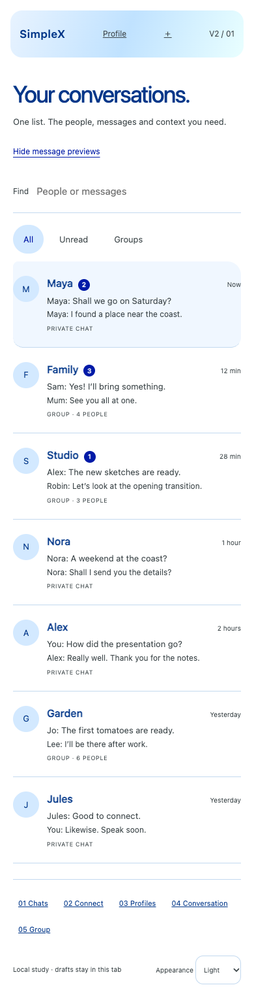
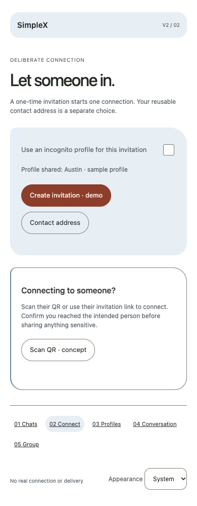
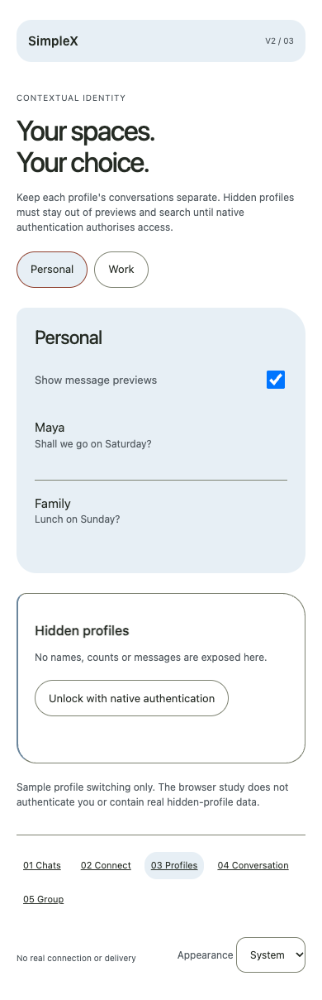
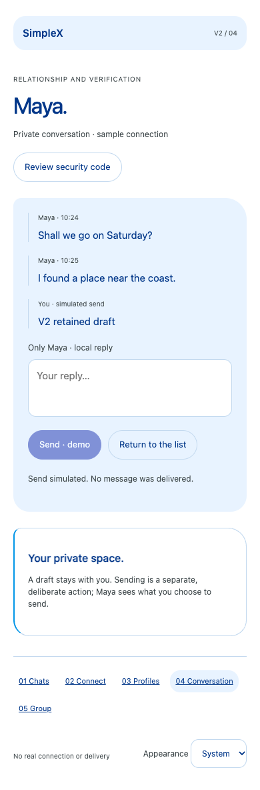
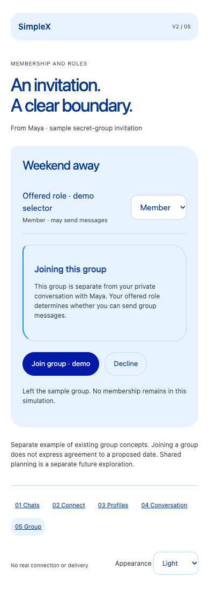

One list, local action.
Multiple messages in one list. Open one relationship, keep surrounding context and drafts, and choose whether previews are visible.
Try the chat menu
These five designs are the project owner’s current reference. Other prototypes and dated walkthroughs document supporting experiments and the design journey.
Explore V2.1: relationships first → · New working hypothesis; V2 remains the current reference.
Read how the octopus theory governs the flow →
2028 / FUTURE EXPERIENCE EXPLORATION
An interface exploration shaped by how simplex.chat connects people: deliberate invitations, local identity and understandable privacy.
The octopus theory is the architecture of the flow: coordination, local action, adaptable space, retained context and deliberate sharing. Human relationships organise the interface. These studies carry those foundations into future experiences, using the approved white canvas, subtle blue materials and neutral lettering. They are independent future-experience experiments and browser simulations. This project asks what messaging could become; it is not a plan to rebuild the current app.
Explore the supporting unfolding experiment ↗
Current reference: Review these five V2 designs first. Earlier critiques remain part of the history; the owner has selected V2 as the present project reference. The future and unfolding studies remain supporting explorations.
Multiple messages in one list. Open one relationship, keep surrounding context and drafts, and choose whether previews are visible.
Try the chat menu
Review the shared profile, choose incognito and create a sample QR invitation. Keep a reusable contact address distinct.
Try the invitation
Switch between separate sample profiles and hide previews. Hidden profiles remain undisclosed; native authentication is a required integration step.
Try profile privacy
Review the idea of security-code comparison, retain a local draft and send explicitly. The demo makes no real verification claim.
Try the conversation
Accept or decline an invitation, explore member and observer roles, and leave. Group membership remains separate from agreeing to a plan.
Try group membership
Read the shared design brief ↗
Read the SimpleX research · Native integration proposal · Earlier concepts
All people and events are fictional. The sample QR encodes a design-study marker, not a valid invitation or cryptographic security code. No real connections, delivery or native authentication are implemented. Dark colours are a proposed adaptation. The iOS and Android clients require native implementation and maintainer review.
The purpose is discovery. Existing SimpleX concepts ground the work; they do not prescribe its future form. Treat these V2 studies as hypotheses to push further, rather than final answers or a near-term feature list.
Build on these ideas: compare navigation, test preview disclosure, refine invitation comprehension, or map one component to the native app. Bring evidence and preserve the iteration history.